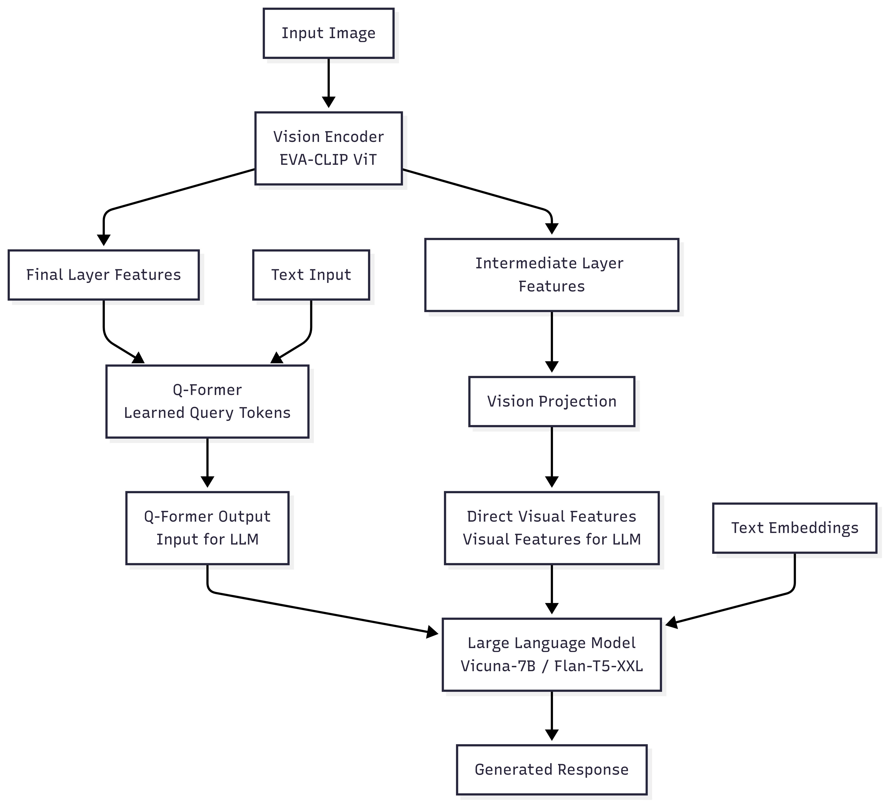
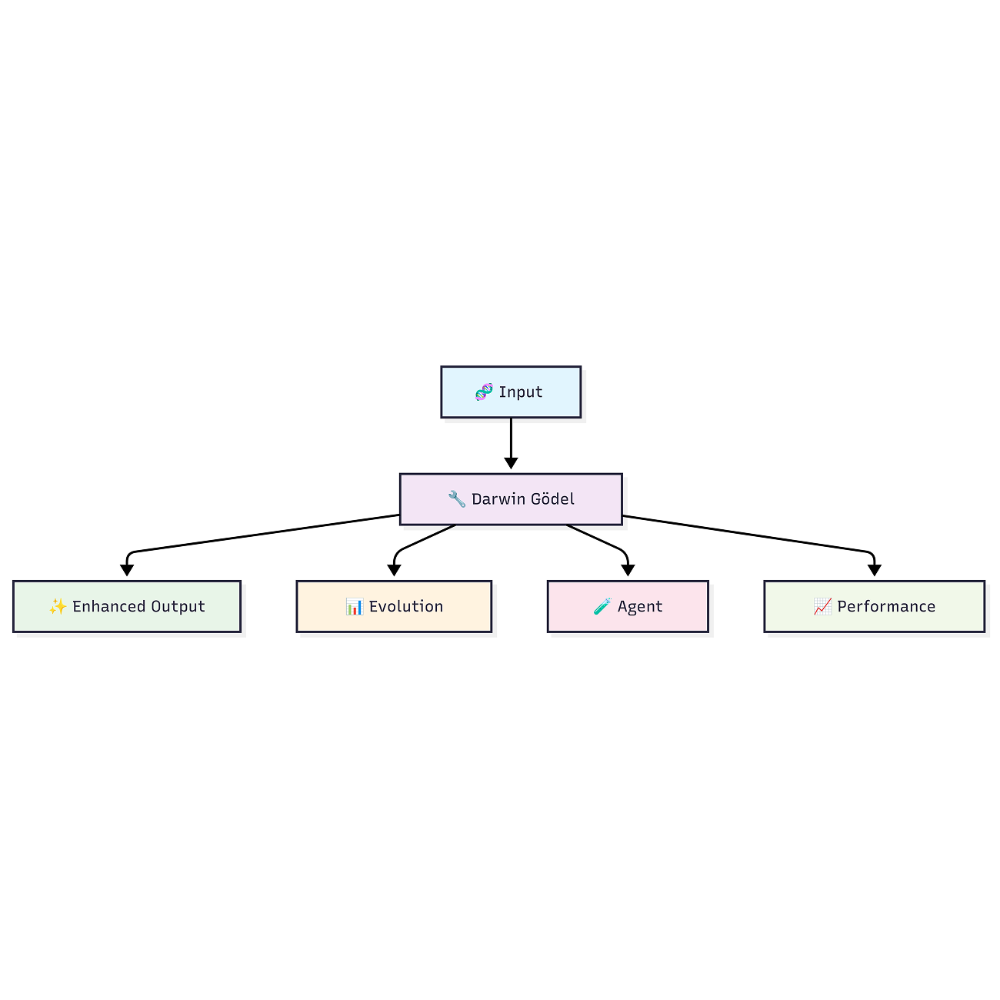
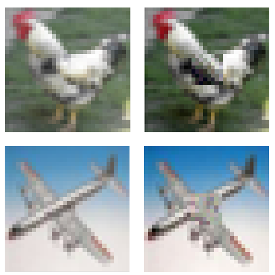
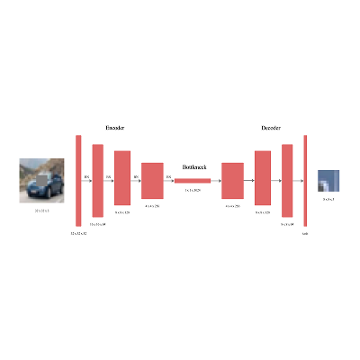
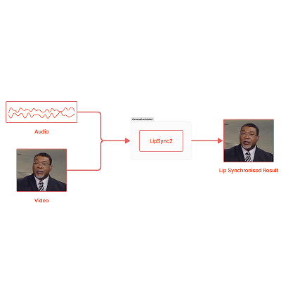
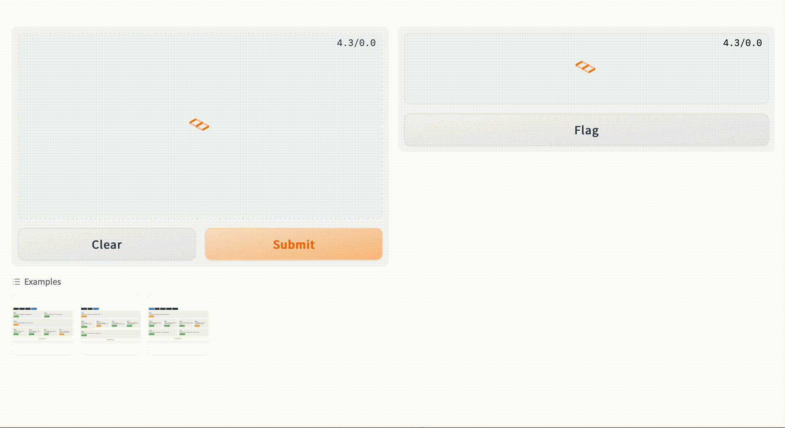
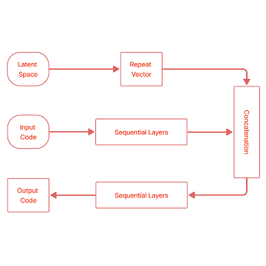

|
AI Researcher and Engineer |
Taneem Ullah Jan I work at the intersection of multimodal learning, 3D human modeling, and generative AI to advance neural avatars, virtual humans, and replicate aspects of the human brain. I serve as an AI Researcher at VOLV AI, where I direct the machine learning team in exploring innovative solutions in 3D computer vision for virtual try-on and digital human synthesis. Previously, I worked as a Research AI Engineer at BHuman AI, leading research and development for their core generative AI products.
|
Research WorkSome projects are highlighted. |
|
|
FlexiSMPL: Flexible SMPL Body Modeling with Real-time 3D Visualization and
Measurement Control
Taneem Ullah Jan [project page] tldr: An interactive 3D body modeling system that allows real-time manipulation of human body shapes through intuitive measurement sliders with immediate visual feedback in a fully navigable 3D environment. |
|

|
VMVLM: Vision-Modulated Vision-Language Models for Improved Instruction
Following
Taneem Ullah Jan [project page] tldr: VMVLM enhances vision-language models by using dual visual pathways, combining Q-Former queries with direct ViT feature injection for improved multimodal instruction following. |
|

|
DGM-LLM: Darwin Gödel Machine
with Large Language Model Integration for Autonomous Code Self-Improvement
Taneem Ullah Jan [project page] tldr: A self-improving AI system that uses LLMs and evolutionary algorithms to autonomously enhance code across multiple quality dimensions. |
|
|
OmniFit-3D: A Unified Framework for 3D Virtual Try-On with Pose-Adaptive
Realism
Taneem Ullah Jan [project page] tldr: A unified framework for 3D virtual try-on that transforms simple 2D images into realistic 3D representations, by efficiently integrating clothing with the human body in a pose-adaptive manner. |
|
|
LipSyncFace: High-Fidelity Audio-Driven and Lip-Synchronized Talking Face
Generation
Taneem Ullah Jan [project page] tldr: A two-stage unified audio-driven talking face generation framework, which can render high-fidelity, lip-synchronized videos with improved inference speed. |
|


|
Beyond CNNs: Encoded Context for Image Inpainting with LSTMs and Pixel
CNNs
Taneem Ullah Jan, Ayesha Noor International Conference on Innovations in Computing Technologies and Information Sciences (ICTIS) and IJIST Special Issue, 2024 Track: Artificial Intelligence, Pattern Recognition & Image Processing [project page] [pdf] tldr: Current image inpainting techniques are too heavy; this paper introduces a Row-wise Flat Pixel LSTM, a small hybrid model for the efficient and high-quality restoration of small images. |
|

|
lipsync2: Talking Face Generation with Most Accurate Lip
Synchronization
Taneem Ullah Jan Work done at and for BHuman AI, 2023 [project page] tldr: A robust and efficient talking face generation model with highly accurate lip synchronization and full facial expressiveness with more extended audio and high-quality video resolutions. |
|
|
face2face: One–Shot Talking Head Video Generation from a Static Source
Image
Taneem Ullah Jan Work done at and for BHuman AI, 2023 [project page] tldr: An unsupervised one-shot talking head video generation model using neural rendering and motion transfer techniques with non-linear transformation to animate static images. |

|
face–swapping: Swapping Faces on Target from given Sources
Taneem Ullah Jan Work done at and for BHuman AI, 2023 [project page] tldr: Innovative face-swapping model that preserves the source identity features accurately while seamlessly adapting target attributes applicable to images and videos. |
|


|
HTML Code Generation from Images with Deep Neural Networks
Taneem Ullah Jan, Zakira Inayat Journal of Engineering and Applied Sciences (JEAS), 2022 Track: Artificial Intelligence, Pattern Recognition & Image Processing [project page] [code] [demo] tldr: An accurate deep learning model converting GUI mockups into HTML code, streamlining web development for non-programmers. |
|
Thanks to Jon Barron for this template.
|